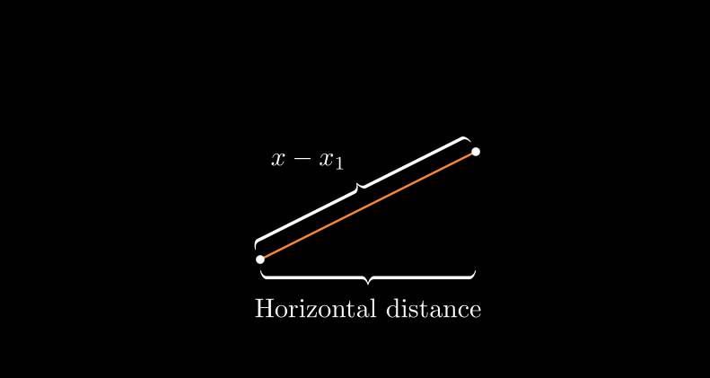

Introducción al Día de las Matemáticas
Cada 14 de marzo celebramos el Día Internacional de las Matemáticas, también conocido como el Día de Pi, en honor al famoso número irracional \(\pi \approx 3.14159\). Este día nos invita a reflexionar sobre la importancia de las matemáticas en la vida cotidiana, en la ciencia y en la tecnología.
Las matemáticas están en todas partes: desde el diseño de algoritmos, pasando por la arquitectura, hasta el arte y la música. Son una herramienta fundamental para entender y modelar el mundo. Este día busca no solo celebrar la belleza de las matemáticas, sino también fomentar su aprendizaje y aplicación en la resolución de problemas del mundo real.
Además, es una ocasión para promover la enseñanza de las matemáticas de forma creativa y accesible, resaltando cómo las nuevas tecnologías pueden facilitar el aprendizaje de conceptos complejos. Las matemáticas pueden ser desafiantes, pero también fascinantes, y herramientas innovadoras permiten transformar la forma en que las enseñamos y aprendemos.
Una de las formas más fascinantes de explorar las matemáticas hoy en día es a través de la visualización, y para ello, Python nos ofrece una herramienta extraordinaria: Manim.
¿Qué es Manim?
Manim (Mathematical Animation Engine) es una librería de Python creada para generar animaciones matemáticas de alta calidad. Permite visualizar conceptos abstractos, ecuaciones, gráficos y transformaciones geométricas de una manera clara y dinámica.
🔹 ¿Por qué usar Manim? - Visualización clara: Hace que conceptos complejos sean más fáciles de comprender. - Automatización: Puedes crear animaciones personalizadas programando en Python. - Calidad profesional: Utilizada en vídeos educativos y presentaciones científicas.
Manim vs. otras herramientas
Existen varias herramientas de visualización matemática como GeoGebra, Desmos y Matplotlib, que son ampliamente utilizadas en el ámbito educativo y profesional. Sin embargo, Manim se diferencia al ofrecer:
- Mayor flexibilidad: Al ser una librería de Python, permite una personalización completa mediante programación, adaptándose a cualquier necesidad específica.
- Animaciones de alta calidad: Ideal para la creación de videos profesionales, presentaciones interactivas o materiales educativos avanzados.
- Integración con otras herramientas: Facilita la integración en flujos de trabajo automatizados o en proyectos más complejos, como la creación de cursos en línea o presentaciones dinámicas.
- Código reproducible: Permite documentar y versionar las visualizaciones de manera eficiente, algo esencial en entornos académicos y científicos.
- Versatilidad: Ideal tanto para pequeñas demostraciones matemáticas como para animaciones más complejas y detalladas.
En comparación, herramientas como GeoGebra son más intuitivas para usuarios sin experiencia en programación, pero ofrecen menos flexibilidad cuando se trata de crear animaciones personalizadas o integrarlas en sistemas automatizados.
Manim es ideal para estudiantes, profesores y divulgadores científicos que deseen presentar ideas matemáticas de forma impactante y creativa, y representa una alternativa avanzada a herramientas tradicionales.
Ejemplos de Visualización Matemática con Manim
Para ilustrar el poder de Manim, veamos algunos ejemplos sencillos pero impactantes.
1. BraceAnnotation: Anotación con Llaves
from manim import *
class BraceAnnotation(Scene):
def construct(self):
dot = Dot([-2, -1, 0]) # Crea el primer punto en las coordenadas (-2, -1)
dot2 = Dot([2, 1, 0]) # Crea el segundo punto en las coordenadas (2, 1)
# Crea una línea entre los dos puntos y le asigna el color naranja
line = Line(dot.get_center(), dot2.get_center()).set_color(ORANGE)
# Crea una llave (brace) en la dirección predeterminada (abajo de la línea)
b1 = Brace(line)
b1text = b1.get_text("Horizontal distance") # Texto asociado a la primera llave
# Crea otra llave perpendicular a la anterior (dirección rotada 90°)
b2 = Brace(line, direction=line.copy().rotate(PI / 2).get_unit_vector())
b2text = b2.get_tex("x-x_1") # Texto en formato LaTeX para la segunda llave
# Añade los elementos a la escena
self.add(line, dot, dot2, b1, b2, b1text, b2text)-
¿Qué hace este código?
- Dibuja dos puntos y una línea que los conecta.
- Añade dos llaves (
Brace):- La primera debajo de la línea, con la etiqueta “Horizontal distance”.
- La segunda en dirección perpendicular, con la fórmula
x-x_1.
- Esto es útil para explicar visualmente distancias o diferencias en coordenadas.

2. BooleanOperations: Operaciones Booleanas con Elipses
from manim import *
class BooleanOperations(Scene):
def construct(self):
# Crea la primera elipse azul
ellipse1 = Ellipse(width=4.0, height=5.0, fill_opacity=0.5, color=BLUE, stroke_width=10).move_to(LEFT)
# Copia la primera elipse, la cambia a rojo y la mueve a la derecha
ellipse2 = ellipse1.copy().set_color(color=RED).move_to(RIGHT)
# Título para la escena
bool_ops_text = MarkupText("<u>Boolean Operation</u>").next_to(ellipse1, UP * 3)
# Agrupa los objetos y los muestra con una animación de entrada
ellipse_group = Group(bool_ops_text, ellipse1, ellipse2).move_to(LEFT * 3)
self.play(FadeIn(ellipse_group))
# 1. Intersección
i = Intersection(ellipse1, ellipse2, color=GREEN, fill_opacity=0.5)
self.play(i.animate.scale(0.25).move_to(RIGHT * 5 + UP * 2.5))
intersection_text = Text("Intersection", font_size=23).next_to(i, UP)
self.play(FadeIn(intersection_text))
# 2. Unión
u = Union(ellipse1, ellipse2, color=ORANGE, fill_opacity=0.5)
union_text = Text("Union", font_size=23)
self.play(u.animate.scale(0.3).next_to(i, DOWN, buff=union_text.height * 3))
union_text.next_to(u, UP)
self.play(FadeIn(union_text))
# 3. Exclusión
e = Exclusion(ellipse1, ellipse2, color=YELLOW, fill_opacity=0.5)
exclusion_text = Text("Exclusion", font_size=23)
self.play(e.animate.scale(0.3).next_to(u, DOWN, buff=exclusion_text.height * 3.5))
exclusion_text.next_to(e, UP)
self.play(FadeIn(exclusion_text))
# 4. Diferencia
d = Difference(ellipse1, ellipse2, color=PINK, fill_opacity=0.5)
difference_text = Text("Difference", font_size=23)
self.play(d.animate.scale(0.3).next_to(u, LEFT, buff=difference_text.height * 3.5))
difference_text.next_to(d, UP)
self.play(FadeIn(difference_text))-
¿Qué hace este código?
- Crea dos elipses superpuestas y muestra las principales operaciones booleanas sobre ellas:
- Intersección: La zona común entre ambas elipses (verde).
- Unión: Toda la zona combinada de las dos elipses (naranja).
- Exclusión: Las áreas que no son comunes (amarillo).
- Diferencia: La parte de una elipse sin la otra (rosado).
- Cada operación se presenta de forma animada y se acompaña de un texto descriptivo.
- Crea dos elipses superpuestas y muestra las principales operaciones booleanas sobre ellas:
3. MovingFrameBox: Resaltando Partes de una Fórmula
from manim import *
class MovingFrameBox(Scene):
def construct(self):
# Fórmula de la derivada del producto
text=MathTex(
"\\frac{d}{dx}f(x)g(x)=", "f(x)\\frac{d}{dx}g(x)", "+",
"g(x)\\frac{d}{dx}f(x)"
)
self.play(Write(text)) # Escribe la fórmula en pantalla
# Crea un rectángulo alrededor del primer término
framebox1 = SurroundingRectangle(text[1], buff = .1)
# Crea un rectángulo alrededor del segundo término
framebox2 = SurroundingRectangle(text[3], buff = .1)
# Muestra el primer recuadro
self.play(Create(framebox1))
self.wait()
# Transforma el primer recuadro en el segundo, moviéndolo
self.play(ReplacementTransform(framebox1, framebox2))
self.wait()-
¿Qué hace este código?
- Muestra la fórmula de la derivada de un producto de funciones.
- Resalta cada término de la fórmula con un cuadro animado:
- Primero, enmarca
f(x)\\frac{d}{dx}g(x). - Luego, mueve el marco para destacar
g(x)\\frac{d}{dx}f(x).
- Primero, enmarca
- Esto es útil para guiar visualmente al espectador sobre cuál término está siendo explicado.
Conclusión
El Día de las Matemáticas es una oportunidad perfecta para celebrar la belleza y la utilidad de esta disciplina. Herramientas como Manim permiten que conceptos complejos sean accesibles y fascinantes a través de visualizaciones interactivas.
✅ Beneficios de usar Manim: - Hace que las matemáticas sean más atractivas y fáciles de entender. - Permite crear contenido visual para clases, conferencias o videos educativos. - Facilita la experimentación y la creatividad en la enseñanza y el aprendizaje. - Ofrece más personalización y control frente a otras herramientas visuales como GeoGebra. - Promueve el pensamiento computacional, al combinar programación y visualización matemática.
Si te apasionan las matemáticas y la programación, ¡anímate a explorar Manim y crea tus propias animaciones matemáticas! 🚀